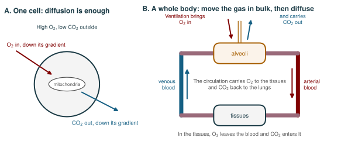
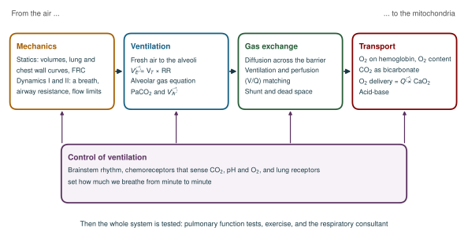
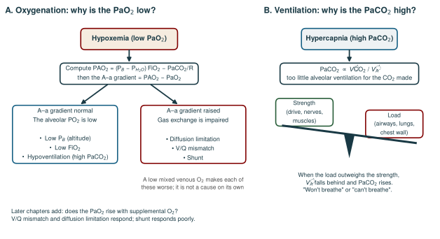

19 Respiratory Physiology Introduction
Two jobs, one system, and a map of the block
- Name the two functions of the lungs, oxygenation and ventilation, and say why the course studies them separately before putting them back together.
- Describe how a breath happens in one sentence: the muscles lower pleural pressure, air flows in, and relaxation lets it flow out.
- Name the parts of the respiratory system (lungs, chest wall including the diaphragm, pleural space, airways, muscles) and the three places a problem can sit: lung, chest wall or muscles.
- Place each lecture of the block on the path of O2 from the air to the tissues and of CO2 back out.
- Recognize the two frameworks the block uses for a low PaO2 (the A–a gradient) and a high PaCO2 (a balance of strength and load). Later lectures teach both.
This chapter is a preview. Everything in it comes back in more detail later in the block.
The respiratory block opens with a short tour. The point of the tour is a framework: when the details of pressures, partial pressures and dissociation curves start to pile up, you should be able to say which part of the system you are in and which of the two jobs it serves. This chapter covers that tour. The next one, Respiratory Statics, starts the details.
19.1 Breathe in, breathe out
Take a deep breath in, then let it out. To breathe in, you used your muscles, mostly the diaphragm, to make the chest bigger. That lowered the pressure around the lungs, the lungs expanded, and air was sucked in through the open airway. To breathe out, you did nothing. You relaxed, and the system sprang back to where it rests. You can also breathe out forcibly, using expiratory muscles, but quiet breathing spends all of its energy on inspiration.
That is most of respiratory mechanics in two sentences. We are negative-pressure breathers: we pull air in by lowering the pressure around the lungs, not by pushing it in. Keep that picture in mind when the pressure symbols multiply in the statics and dynamics chapters.
19.2 Why we need lungs at all
A single cell living in water gets its O2 by diffusion. Outside the cell, O2 is high and CO2 is low. Inside, the mitochondria use O2 and make CO2. Each gas moves down its gradient across the membrane, and nothing else is needed (Figure 19.1 A).

A cell in your kidney or your calf muscle is far from fresh air, so the body does the same job in stages (Figure 19.1 B). Bulk flow of air (ventilation) brings air rich in O2 to the alveoli. O2 diffuses across the thin alveolar-capillary barrier into the blood and binds to hemoglobin. The circulation carries it to the tissues, where it diffuses out to the cells that use it. CO2 makes the reverse trip, and the same bulk flow of air blows it off. The intent in the mitochondria is the same as in the single cell. The body just needs several organs to keep the gradients in place.
The cardiovascular block ended with the blood going round and round. This block assumes that and asks how the lungs load O2 into that blood and take CO2 out of it.
19.3 Two jobs: oxygenation and ventilation
The lungs do two things.
- Oxygenation is getting O2 from the air into the arterial blood. Its end point is the arterial PO2 (PaO2) and the saturation of hemoglobin.
- Ventilation is getting CO2 out of the body. Its end point is the arterial PCO2 (PaCO2).
Both happen in the same lungs with the same breaths, but what controls each one is different, so the course teaches them as if they were in separate silos. Once you know how each works, the later lectures put them back together and ask how a problem with one affects the other. When you meet a patient who is short of breath, the first question the course teaches you to ask is: is this a problem of oxygenation, of ventilation, or both?
19.4 The parts of the system
The respiratory system has these parts:
- The lungs: the airways, which conduct air, and the alveoli, where gas exchange happens.
- The chest wall: the ribs, the intercostal muscles, and everything else that surrounds the thorax. The diaphragm counts as part of the chest wall. It forms the floor of the thorax, and it is also the main muscle of inspiration. It does most of the work in quiet breathing, with help from the intercostal and scalene muscles, and more neck muscles join in when you breathe hard.
- The pleural space: the thin, closed space between the lungs and the chest wall. It holds almost no fluid, and because it is sealed, it links the two. When the chest wall is pulled outward, pleural pressure falls, the lungs are pulled outward with it, alveolar pressure falls below the pressure at the mouth, and air rushes in.
The course compresses the mechanics into one phrase: the chest wall wants to be big, and the lungs want to be small. Linked by the pleural space, they settle at a volume where the two pulls balance. That resting volume, at the end of a quiet breath out, is the functional residual capacity (FRC). The lecture calls FRC the starting point of respiratory physiology, the way mean systemic filling pressure (Pms) was the starting point of the circulation’s Guyton curves.
Because the system has three parts, a problem can sit in only three places: the lung, the chest wall, or the muscles. The course uses that idea all through the block, from the pressure-volume curves of statics to the pulmonary function tests at the end.
19.5 A map of the block
Figure 19.2 lays the lectures along the path that O2 takes. Each box is one or more chapters of this book.

Mechanics. Respiratory Statics names the lung volumes and capacities and explains the pressure-volume curves of the lung, the chest wall and the whole respiratory system, and how the muscles set the largest and smallest volumes. Respiratory Dynamics I makes the system move: how pleural pressure, alveolar pressure and flow change through one quiet breath. Respiratory Dynamics II adds the airways. Ohm’s law returns from the cardiovascular block (pressure difference = flow × resistance), and airway resistance is what goes wrong in common diseases such as asthma. It also explains why even healthy people hit a limit on how fast they can breathe out.
Ventilation. Alveolar Ventilation follows air from the atmosphere to the alveoli. Minute ventilation is tidal volume times breathing rate (V̇E = VT × RR), much as cardiac output is stroke volume times heart rate. Part of each breath only fills the conducting airways, so it is alveolar ventilation (V̇A) that matters. The alveolar gas equation gives the alveolar PO2, and V̇A sets the PaCO2.
Gas exchange. Diffusion covers how gas crosses the alveolar-capillary barrier, written as Fick’s law of diffusion. Ventilation and Perfusion covers the matching of air to blood. Where there is a lot of blood flow there should be a lot of ventilation. A unit with blood flow but no air (shunt) or air but no blood flow (dead space) wastes effort.
Transport. Transport of O2 and CO2 covers hemoglobin, O2 content, and the Fick principle, V̇O2 = Q̇ × (CaO2 − CvO2). O2 delivery is cardiac output times arterial O2 content. Pulmonary Acid Base adds the link between CO2 and pH.
Control. Control of Ventilation covers how the brainstem senses CO2, pH and O2 and adjusts breathing, mostly without your noticing. Ask someone to think about their breathing and it gets messed up.
Putting it together. Physiology of Exercise revisits exercise from the respiratory side: if cardiac output rises several-fold, the same extra blood flows through the lungs, and ventilation has to keep up. Think Like a Respiratory Consultant brings the whole block to the patient through pulmonary function testing. The pulmonary circulation was taught in the cardiovascular block; see Pulmonary Circulation.
The tour also named the lung volumes and capacities (tidal volume, FRC, TLC, RV, vital capacity); Respiratory Statics defines them.
Pulmonary function tests run through the whole block. A full set is spirometry, lung volumes from a body box, and the diffusing capacity. This is not the clinical part of the curriculum, but disease is a useful counterexample: seeing how emphysema or interstitial lung disease breaks the normal physiology makes the normal physiology clearer. The course uses those diseases as labels for physiological patterns, not to teach their treatment.
The lecture compares respiratory physiology to the game Othello: a minute to learn, a lifetime to master. There are not that many facts, but they combine in many ways. Work with a pencil. Most of the graphs in this block are curves that bend, and you learn them by drawing them, moving them, and drawing them again.
19.6 Two scaffolds you will fill in
Two frameworks organize the clinical end of the block. This section is a preview: the hypoxemia framework is taught in Ventilation and Perfusion, and the hypercapnia framework in Pulmonary Acid Base and Think Like a Respiratory Consultant. It helps to see their shape now (Figure 19.3).

19.6.1 Oxygenation: why is the PaO2 low?
Hypoxemia means a low PaO2. To work out why, the course starts from the alveolar gas equation, which gives the PO2 in the alveoli:
\[P_AO_2 = (P_B - P_{H_2O})\,F_iO_2 - \frac{P_aCO_2}{R}\]
Here PB is barometric pressure, PH2O is water vapor pressure (47 mm Hg), FiO2 is the fraction of O2 in inspired air (0.21 for room air), and R is the respiratory exchange ratio (about 0.8). The Alveolar Ventilation chapter derives it.
If you know the PAO2 and measure the PaO2, the difference between them is the A–a gradient (PAO2 − PaO2). It sorts hypoxemia into two groups.
- A–a gradient normal: the alveolar PO2 itself is low. Either barometric pressure is low (high altitude), the inspired O2 fraction is low (for example, a confined space where another gas has displaced O2), or the patient is hypoventilating, so CO2 builds up in the alveoli and takes the place of O2 (a high PaCO2 in the equation). The lungs pass on what they receive, and what they receive is too little.
- A–a gradient raised: the alveolar gas is fine, but O2 is not getting into the blood. The causes are diffusion limitation, ventilation-perfusion (V/Q) mismatch and shunt.
A low O2 content in mixed venous blood, as in heart failure or fever, makes each of these gas-exchange problems worse, because the blood that escapes full exchange arrives with less O2 to begin with. In normal lungs it causes almost no hypoxemia on its own.
Later lectures add a second branch point: does the PaO2 rise with supplemental O2? Hypoxemia from V/Q mismatch or diffusion limitation improves. Hypoxemia from shunt responds poorly, because the shunted blood never meets the extra O2.
The Intro hypoxemia slide lists “Poor venous saturation/admixture” as a fourth cause of a raised PAO2 − PaO2. A low mixed venous saturation lowers PaO2 only through blood that passes a shunt, low V/Q units, or a diffusion-limited barrier. It makes those three mechanisms worse rather than standing as a mechanism of its own, which is how the Ventilation and Perfusion lecture presents its shunt case. The course errata make the same correction.
19.6.2 Ventilation: why is the PaCO2 high?
Hypercapnia means a high PaCO2. The PaCO2 is set by how fast CO2 is made and how fast alveolar ventilation clears it:
\[P_aCO_2 \propto \frac{\dot{V}CO_2}{\dot{V}_A}\]
A high PaCO2 almost always means the alveolar ventilation is too low for the CO2 being made. The course asks why with a balance. On one side is the strength of the system: the drive from the brainstem, the nerves and the respiratory muscles. On the other is the load: stiff lungs, narrowed airways, a heavy or stiff chest wall, or a large amount of CO2 to clear. When the load outweighs the strength, ventilation falls behind. The course’s shorthand is “won’t breathe” (drive is low, as with opioids) versus “can’t breathe” (the muscles cannot move the load). Pulmonary Acid Base and Think Like a Respiratory Consultant work through it.
19.7 Check your understanding
You hold your breath at the end of a quiet exhalation and relax every muscle. Why does your chest neither shrink nor expand?
Answer
You are at FRC. The lungs pull inward and the chest wall pulls outward, and at this volume the two pulls are equal, so no muscle force is needed to hold it. The pleural space links them, so they must share one volume.
Which of the two lung functions does each of these measure: the PaCO2, the PaO2, the hemoglobin saturation?
Answer
PaCO2 measures ventilation. PaO2 and saturation measure oxygenation. A patient can have a problem with one and not the other, which is why the course asks “oxygenation or ventilation?” first.
A climber on a high mountain has a low PaO2. Her lungs are healthy. Would you expect her A–a gradient to be normal or raised, and why?
Answer
Normal. Barometric pressure is low, so the alveolar PO2 is low, and healthy lungs pass that low PO2 on to the blood. The gradient between alveolus and artery is not the problem; the alveolar PO2 is.
A patient breathes in normally but cannot breathe out forcibly. Can she still exhale a quiet tidal breath? Why?
Answer
Yes. Quiet expiration is passive. When the inspiratory muscles relax, the respiratory system’s net inward recoil above FRC (the lungs’ inward pull now exceeds the chest wall’s outward pull) pushes the air back out and returns the system to FRC. Expiratory muscles are only needed to breathe out below FRC or faster than recoil alone allows.
You are handed four numbers for a patient: SaO2, PaCO2, FEV1 and PaO2. Which would you look at to decide whether the problem is one of oxygenation or of ventilation, and which job does each report on?
Answer
PaO2 and SaO2 report on oxygenation, and PaCO2 reports on ventilation, so those three answer the question. FEV1 reports on neither directly. It measures how fast air can be blown out of the lungs, which is mechanics: a low FEV1 can lead to a ventilation or an oxygenation problem, or to neither.
19.8 Equations you will meet in this block
| Equation | Use | Taught in |
|---|---|---|
| ΔP = flow × resistance | Ohm’s law, for air as for blood | Respiratory Dynamics I and II |
| V̇E = VT × RR | Minute ventilation | Alveolar Ventilation |
| PAO2 = (PB − PH2O) FiO2 − PaCO2/R | Alveolar gas equation | Alveolar Ventilation |
| A–a gradient = PAO2 − PaO2 | Sorting hypoxemia | Ventilation and Perfusion |
| PaCO2 ∝ V̇CO2 / V̇A | Ventilation and CO2 | Alveolar Ventilation |
| V̇O2 = Q̇ × (CaO2 − CvO2) | Fick principle | Transport of O2 and CO2 |
| O2 delivery = Q̇ × CaO2 | Delivery to the tissues | Transport of O2 and CO2 |
19.9 Sources
This chapter follows the 2026 Respiratory Physiology Introduction lecture for MEDC 30504, given as the opening of the first statics session, and draws on the 2025 recording of the same lecture and the course’s lecture notes, corrected and updated. All figures were drawn for this book.